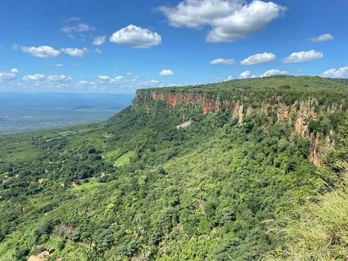
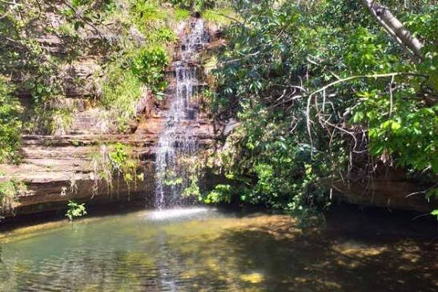
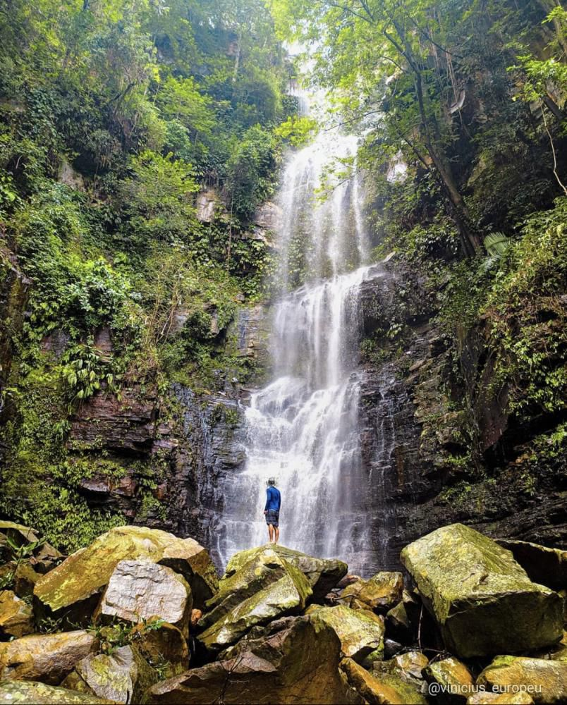

Atrações

Morro do Gritador

Cachoeira do Salto Liso

Cachoeira do Urubu Rei

Cachoeira do Tombador

Explore os lugares mais encantadores de Pedro II, com paisagens únicas, cachoeiras cristalinas e vistas de tirar o fôlego.


